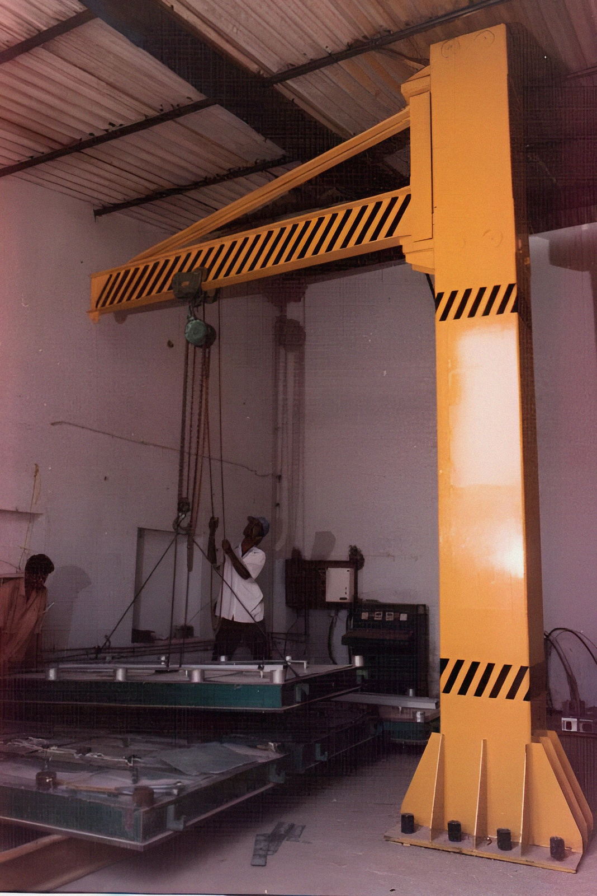

Gantry Crane
JIB Crane 180° & 360°


Jib cranes assist the staff, multiplying human efforts and are an invaluable material handling solutionfor a standalone workstation or machine assembly area. Jib Cranes for a single workstation or group of workstations allows for efficient material handling by reducing wait time for an overhead crane.
We designs and manufactures Jib Cranes to suit specific requirements, handling loads precisely and effortlessly. Our Jib Cranes comes with easily Rotating Arm in 180º or 360º of rotation. This rotating Arm is either mounted on wall, self-supporting floor mounted column or pillar supports. Jib Cranes are useful for loading or unloading material on machine tools & trucks.
Wire Rope Electric Hoists, Chain Hoists or Chain Pulley Block does the lifting and moving duty on these Jib Cranes.
Jib Cranes are divided into two subcategories: